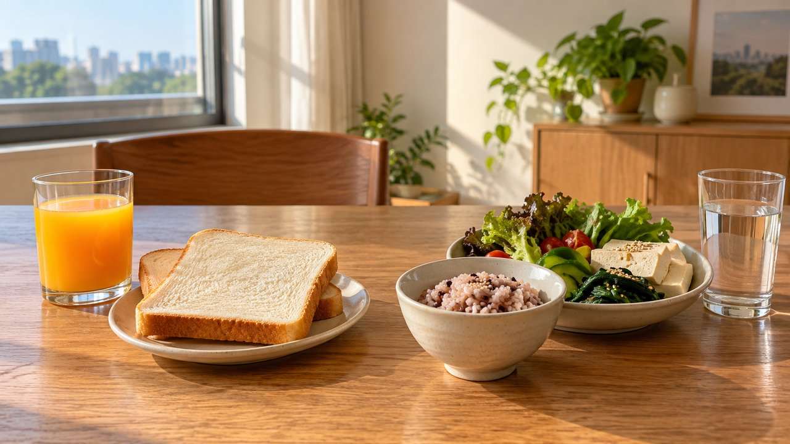
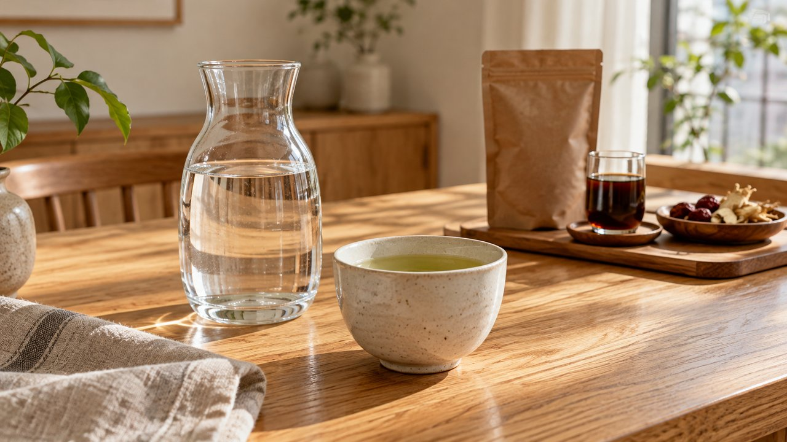

간수치 높은 이유와 정상범위, "술 한 모금 안 마시는데" 매일 먹은 빵과 과일이 지방간 부르는 까닭
우편함에서 꺼낸 건강검진 결과표를 펼쳤는데
생각지도 못한 간 항목에서 경계나 이상 표시를 보신 적 있으시죠?
평소 술자리도 멀리하고 기름진 고기도 자제해 왔다면
왜 간수치가 올라갔는지 억울한 마음부터 들기 마련입니다.
더구나 피곤함을 풀어보겠다며 진한 약초 즙이나 헛개수원액을 찾거나
체중을 빨리 줄이려고 저녁 끼니를 아예 굶어버리는 분들도 많습니다.
하지만 이런 습관은 오히려 지쳐 있는 간세포를 더 힘들게 만들어
수치를 두 배로 끌어올리는 뜻밖의 결과를 부를 수 있습니다.
의학적 분류 기준(주간 남성 210g·여성 140g 미만)이라도 빵과 주스를 즐기면
간 조직 5% 이상에 기름이 차오르는 대사이상 지방간이 생길 수 있습니다.
먼저 검진표에 적힌 세 가지 알파벳의 간수치 정상범위부터 살펴볼까요?
일반적으로 AST와 ALT는 0~40 IU/L 안팎을 참고 기준으로 삼으며
검진표의 양호 판정(정상A)은 AST 40 이하, ALT 35 이하로 봅니다.
쓸개관 효소인 감마GTP는 남성 11~63, 여성 8~35 IU/L가 기준입니다.

재미있는 점은 어느 항목이 더 올랐는지에 따라 숨은 이유가 다르다는 것입니다.
AST는 간뿐 아니라 심장과 근육에도 들어 있어서 검진 전날 무리하게
아령을 들거나 근육 운동을 했을 때도 일시적으로 오를 수 있습니다.
반면 ALT는 주로 간세포 안에만 모여 있어 만성적인 지방간 손상을 잘 보여줍니다.

그렇다면 술을 입에도 안 대는데 왜 간에 기름이 쌓이는 걸까요?
식사 대신 자주 챙겨 먹은 부드러운 빵과 떡, 달콤한 과일주스 속 과당이
소화되자마자 간으로 곧장 이동해 중성지방으로 바뀌기 때문입니다.
여기에 체질량지수 23 kg/m² 이상이거나 허리둘레(남성 90cm·여성 85cm 이상),
공복혈당 100 mg/dL 이상, 중성지방 150 mg/dL 이상 등 5가지 대사 지표 중
1가지라도 겹치면 대사이상 지방간으로 이어져 동맥경화 등 혈관 건강까지 위협합니다.


간수치 높은 이유를 알게 된 뒤 특히 조심해야 할 행동이 바로
간에 좋은 음식을 찾겠다며 진하게 달인 즙이나 엑기스를 마시는 일입니다.
주변에서 좋다는 말만 듣고 녹즙이나 인진쑥, 헛개수원액 같은 농축액을
매일 아침저녁으로 챙겨 드시는 분들이 생각보다 많습니다.

하지만 이미 지쳐 있는 간에 고농축 식물 추출물이 한꺼번에 들어오면
해독 한계를 넘어서면서 오히려 급격한 독성 간손상을 부를 수 있습니다.
우리나라에서 연간 10만 명당 12명꼴로 생기는 독성 간염의 주된 원인 4가지가
바로 상비·복용 약물과 한약, 건강보조제, 그리고 민간요법 즙입니다.
최근 1개월 내 시작한 물질뿐 아니라 이전부터 먹어온 보조제·즙까지 모두 살피고,
검증 안 된 즙은 멈추되 기존 복용 약물은 임의로 끊지 말고 전문의와 상의하세요.

그렇다면 비알코올성 지방간을 비워내고 간수치 낮추는법의 정석은 무엇일까요?
마음이 급하다고 며칠씩 끼니를 굶는 단식을 하면 온몸의 지방산이
한꺼번에 간으로 몰려들어 오히려 염증이 더 심해질 수 있습니다.
과체중·비만일 때는 하루 열량을 500~1,000kcal 낮춰 몸무게를 3~5%(기름기 완화)부터
7~10%(염증·섬유화 호전 도움, 개인차 존재)까지 차근차근 줄이고,
정상체중·고령·근감소증 상태라면 근육을 지키는 맞춤 조절이 필요합니다.

식탁에서는 탄산음료와 가당 과일주스를 치우고 맑은 물이나 녹차를 가까이하세요.
흰 빵과 면 대신 식이섬유가 풍부한 채소와 통곡물, 삶거나 찐 요리를 고르고
주 3회 이상, 한 번에 30분 이상 옆 사람과 대화할 수 있는 빠르기로
유산소 걷기와 근력 운동을 꾸준히 병행해 주시면 됩니다.

만약 수치가 경계를 넘어 높게 나왔거나 눈 흰자가 노래지는 황달, 짙은 소변,
오른쪽 윗배 불편감이 느껴진다면 미루지 말고 내과 전문의를 찾아
9~12시간 공복 혈액검사와 복부 초음파로 면밀히 확인해 보시길 바랍니다.
여러분은 평소 식후에 달콤한 과일주스나 빵을 자주 드시는 편인가요?
아니면 오늘부터 시원한 물과 녹차로 먼저 바꿔보시겠어요? 댓글로 편하게 남겨주세요 😊

1. 국가건강정보포털 (KDCA) — 대사이상 지방간(구 비알코올성 지방간) 체중 3~5%·7~10% 감량 및 식이·운동 수칙 (cntnts_sn=6673)
2. 국가건강정보포털 (KDCA) — 간기능검사(AST·ALT·감마GTP) 참고 범위 및 수치별 상승 양상 해석 (cntnts_sn=5444)
3. 국가건강정보포털 (KDCA) — 독성 간 손상 주요 원인 4가지 및 건강보조제·녹즙 주의 지침 (cntnts_sn=6585)
4. 대한간학회 (KASL) — 대사이상 지방간(MASLD) 및 비알코올 지방간(NAFLD) 임상 가이드라인 (Clin Mol Hepatol 2025 PMID: 39967303 / 2021 PMID: 34154309)
#간수치높은이유 #간수치정상범위 #비알코올성지방간 #지방간식단 #간수치낮추는법 #지방간에좋은음식 #헛개수원액 #감마GTP #ASTALT #동맥경화 #에디터혀니 #혀니의꿀단지